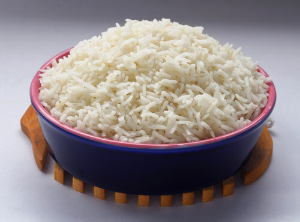

Boiled White Rice

Ingredients
- Washed Basmati Rice
- Oil
- Salt (to taste)
Instructions
- Fill a pot with water and add the rice:The rice should be covered by several inches of water.If using, add at least 1 teaspoon of salt per cup of rice. Stir a few time to make sure the rice and water are mixed
- Bring to a boil over high heat, then reduce to simmer: Let the water come to a roiling boil, then reduce the heat until it maintains a gentle bubbling simmer.
- Cook the rice until barely tender: WHite rice will cook in roughly 20-30 minutes.Stir the rice a few times during cooking, when you remember.
Taste it as you get toward the end of cooking to test its doneness. It's ready when tender and no longer crunchy, but still a touch too firm for your liking.
- Drain the rice:
Set the strainer over your sink or a large bowl and strain the rice and cooking liquid. (The cooking liquid can be saved for other cooking projects.)
Shake the strainer a few times to fully drain the rice.
- Return to the pot, cover, and let stand:
Immediately after straining, while the rice is still hot and steamy, transfer the rice back to the pot and cover with the lid. Let stand off the heat, for 10 to 15 minutes.
The steam from hot rice trapped in the pan will finish cooking the rice and help give it a perfect texture.
- Fluff and serve: Uncoer the rice, fluff with a fork, and sreve.